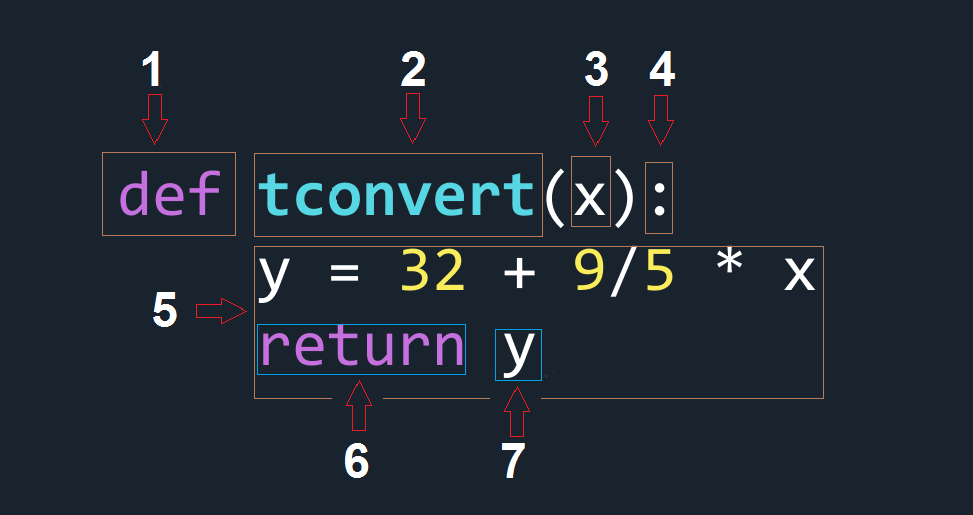

Richard Waterman
September 2026
def tconvert(x):
y = 32 + 9/5 * x
return y
# Call the function a couple of times
print(tconvert(22))
print(tconvert(100)) 71.6
212.0

def tconvert(x):
'''Takes in a number x, returns the converted temperature of x.'''
y = 32 + 9/5 * x
return y
print(tconvert.__doc__)Takes in a number x, returns the converted temperature of x.---------------------------------------------------------------------------
TypeError Traceback (most recent call last)
Cell In[3], line 1
----> 1 print(tconvert("It's hot!"))
Cell In[2], line 3, in tconvert(x)
1 def tconvert(x):
2 '''Takes in a number x, returns the converted temperature of x.'''
----> 3 y = 32 + 9/5 * x
4 return y
TypeError: can't multiply sequence by non-int of type 'float'def tconvert(x):
'''Takes in a number x, returns the converted temperature of x.'''
if (isinstance(x, (int, float)) and not isinstance(x, (bool))): #Booleans are also ints!
y = 32 + 9/5 * x
return y
else:
return "This function only works with numbers."
print(tconvert(3))
print(tconvert(21.2))
print(tconvert(True))
print(tconvert("It's hot!"))37.4
70.16
This function only works with numbers.
This function only works with numbers.def tconvert(x, direction):
'''Takes in a number x, returns the converted temperature of x.'''
if not ( (direction == "f2c") or (direction == "c2f")):
return "Direction must be 'c2f' or 'f2c'."
if not ( isinstance(x, (int, float)) and not isinstance(x, (bool))): # Booleans are also ints!
return "This function only works with numbers."
if direction == "c2f":
y = 32 + 9/5 * x
return y
if direction == "f2c":
y = (x - 32) * 5/9
return y print(tconvert(0.0, "c2f"))
print(tconvert(71, "f2c"))
print(tconvert(71, "a2b")) # Break it on purpose.
print(tconvert(225,"c2f"))32.0
21.666666666666668
Direction must be 'c2f' or 'f2c'.
437.0-6.111111111111111 Cell In[8], line 1
print(tconvert(direction = "f2c", 212)) # This is illegal.
^
SyntaxError: positional argument follows keyword argumentdef tconvert(x, direction = "c2f"):
'''Takes in a number x, returns the converted temperature of x.'''
if not ( (direction == "f2c") or (direction == "c2f")):
return "Direction must be 'c2f' or 'f2c'."
if not ( isinstance(x, (int, float)) and not isinstance(x, (bool))): # Booleans are also ints!
return "This function only works with numbers."
if direction == "c2f":
y = 32 + 9/5 * x
return y
if direction == "f2c":
y = (x - 32) * 5/9
return y50.0
392.0C:\Users\water\AppData\Local\Temp\ipykernel_27456\4200730798.py:3: FutureWarning: Series.__getitem__ treating keys as positions is deprecated. In a future version, integer keys will always be treated as labels (consistent with DataFrame behavior). To access a value by position, use `ser.iloc[pos]`
return y.index[0], y[0], y.index[1], y[1], y.index[2], y[2] # Return multiple values.
('j', np.int64(116), 'd', np.int64(108), 'b', np.int64(107))import math
def data_transform(x, fn):
return [fn(input) for input in x] # Notice that the function "fn" is being used in the comprehension.
data = [1,2,5,6,2,1]
print(data_transform(data, lambda y: y**2))
print(data_transform(data, lambda y: math.log(y)))[1, 4, 25, 36, 4, 1]
[0.0, 0.6931471805599453, 1.6094379124341003, 1.791759469228055, 0.6931471805599453, 0.0][np.int32(25), np.int32(49), np.int32(0), np.int32(4), np.int32(9)]# Read in a data frame for illustration.
import os
os.chdir('C:\\Users\\water\\Dropbox (Penn)\\Richard\\Teaching\\7770f2026_Q1\\DataSets')
op_data = pd.read_csv("Outpatient_to_clean.csv") # Note, no index column.
print(op_data.shape) # Track the dimensions.
op_data.drop(op_data.index[0], inplace=True) # Drop the first row.
print(op_data.shape) # Track the dimensions.
op_data.drop(op_data.index[-1], inplace=True) # Drop the last row.
print(op_data.shape) # Track the dimensions.(3699, 9)
(3698, 9)
(3697, 9)print(op_data['Status'].value_counts())
temp = op_data[op_data['Status'] != "Bumped"] # The logical filter selects all rows, that are not Bumped.
temp['Status'].value_counts() # Note that "Bumped has gone".Status
Arrived 2164
Cancelled 795
No Show 526
Bumped 209
Rescheduled 1
Name: count, dtype: int64
Status
Arrived 2164
Cancelled 795
No Show 526
Rescheduled 1
Name: count, dtype: int64If you know upfront that that certain rows at the beginning or end of the data frame need to be dropped, you could use the arguments to read_csv:
You can specify the specific line numbers to skip, or number of lines at the bottom of the file to skip with the arguments:
# Notice the NaN's in the data frame.
op_data = pd.read_csv("Outpatient_to_clean.csv", parse_dates = ['SchedDate', 'ApptDate'])
print(op_data.head(5)) PID SchedDate ApptDate Dept Language Sex Age \
0 P10092 2012-07-27 2012-10-05 DERM ENGLISH F 80+
1 P10151 2013-11-28 2014-01-03 PULMONARY SPANISH Didn't say 32
2 P10962 2012-02-02 2012-02-10 NaN ENGLISH M 12
3 P10896 2011-11-08 2011-12-06 GENERAL SURGERY SPANISH F NaN
4 P10320 2012-10-25 2012-12-11 NEPHROLOGY SPANISH NaN 45
Race Status
0 AFRICAN AMERICAN Arrived
1 HISPANIC Cancelled
2 AFRICAN AMERICAN NaN
3 HISPANIC Bumped
4 HISPANIC No Show op_data.dropna(inplace=True) # '.dropna()' removes all rows with any missing data.
print(op_data.head(5)) # Note that some of the rows have disappeared. PID SchedDate ApptDate Dept Language Sex Age \
0 P10092 2012-07-27 2012-10-05 DERM ENGLISH F 80+
1 P10151 2013-11-28 2014-01-03 PULMONARY SPANISH Didn't say 32
6 P10410 2013-10-31 2013-11-03 ORTHOPAEDICS ENGLISH M 54
10 P10391 2012-12-24 2012-12-27 GENERAL SURGERY ENGLISH F 49
12 P10138 2011-11-14 2011-11-20 CPO ENGLISH F 45
Race Status
0 AFRICAN AMERICAN Arrived
1 HISPANIC Cancelled
6 AFRICAN AMERICAN No Show
10 WHITE (NON-HISPANIC) Arrived
12 HISPANIC Arrived PID SchedDate ApptDate Dept Language Sex Age \
0 P10092 2012-07-27 2012-10-05 DERM ENGLISH F 80+
1 P10151 2013-11-28 2014-01-03 PULMONARY SPANISH Unknown 32
6 P10410 2013-10-31 2013-11-03 ORTHOPAEDICS ENGLISH M 54
10 P10391 2012-12-24 2012-12-27 GENERAL SURGERY ENGLISH F 49
12 P10138 2011-11-14 2011-11-20 CPO ENGLISH F 45
13 P10677 2011-04-17 2011-05-09 GASTROENTEROLOGY ENGLISH Unknown 31
14 P10229 2013-10-07 2013-11-18 VASCULAR SURGERY ENGLISH F 39
Race Status
0 AFRICAN AMERICAN Arrived
1 HISPANIC Cancelled
6 AFRICAN AMERICAN No Show
10 WHITE (NON-HISPANIC) Arrived
12 HISPANIC Arrived
13 HISPANIC Arrived
14 HISPANIC No Show 0 DERM
1 PULMONARY
6 ORTHOPAEDICS
10 GENERAL SURGERY
12 CPO
...
3694 RHEUMATOLOGY
3695 OTOLARYNGOLOGY
3696 VASCULAR SURGERY
3697 NEUROLOGICAL
3698 DERM
Name: Dept, Length: 3688, dtype: object PID SchedDate ApptDate Dept Language Sex Age \
0 P10092 2012-07-27 2012-10-05 DERM ENGLISH F 80+
1 P10151 2013-11-28 2014-01-03 PULMONARY SPANISH Unknown 32
Race Status
0 AFRICAN AMERICAN Arrived
1 HISPANIC Cancelled
---------------------------------------------------------------------------
TypeError Traceback (most recent call last)
Cell In[23], line 2
1 print(op_data[0:2])
----> 2 op_data['Age'].mean() # This fails.
File ~\anaconda3\Lib\site-packages\pandas\core\series.py:6570, in Series.mean(self, axis, skipna, numeric_only, **kwargs)
6562 @doc(make_doc("mean", ndim=1))
6563 def mean(
6564 self,
(...) 6568 **kwargs,
6569 ):
-> 6570 return NDFrame.mean(self, axis, skipna, numeric_only, **kwargs)
File ~\anaconda3\Lib\site-packages\pandas\core\generic.py:12485, in NDFrame.mean(self, axis, skipna, numeric_only, **kwargs)
12478 def mean(
12479 self,
12480 axis: Axis | None = 0,
(...) 12483 **kwargs,
12484 ) -> Series | float:
> 12485 return self._stat_function(
12486 "mean", nanops.nanmean, axis, skipna, numeric_only, **kwargs
12487 )
File ~\anaconda3\Lib\site-packages\pandas\core\generic.py:12442, in NDFrame._stat_function(self, name, func, axis, skipna, numeric_only, **kwargs)
12438 nv.validate_func(name, (), kwargs)
12440 validate_bool_kwarg(skipna, "skipna", none_allowed=False)
> 12442 return self._reduce(
12443 func, name=name, axis=axis, skipna=skipna, numeric_only=numeric_only
12444 )
File ~\anaconda3\Lib\site-packages\pandas\core\series.py:6478, in Series._reduce(self, op, name, axis, skipna, numeric_only, filter_type, **kwds)
6473 # GH#47500 - change to TypeError to match other methods
6474 raise TypeError(
6475 f"Series.{name} does not allow {kwd_name}={numeric_only} "
6476 "with non-numeric dtypes."
6477 )
-> 6478 return op(delegate, skipna=skipna, **kwds)
File ~\anaconda3\Lib\site-packages\pandas\core\nanops.py:147, in bottleneck_switch.__call__.<locals>.f(values, axis, skipna, **kwds)
145 result = alt(values, axis=axis, skipna=skipna, **kwds)
146 else:
--> 147 result = alt(values, axis=axis, skipna=skipna, **kwds)
149 return result
File ~\anaconda3\Lib\site-packages\pandas\core\nanops.py:404, in _datetimelike_compat.<locals>.new_func(values, axis, skipna, mask, **kwargs)
401 if datetimelike and mask is None:
402 mask = isna(values)
--> 404 result = func(values, axis=axis, skipna=skipna, mask=mask, **kwargs)
406 if datetimelike:
407 result = _wrap_results(result, orig_values.dtype, fill_value=iNaT)
File ~\anaconda3\Lib\site-packages\pandas\core\nanops.py:720, in nanmean(values, axis, skipna, mask)
718 count = _get_counts(values.shape, mask, axis, dtype=dtype_count)
719 the_sum = values.sum(axis, dtype=dtype_sum)
--> 720 the_sum = _ensure_numeric(the_sum)
722 if axis is not None and getattr(the_sum, "ndim", False):
723 count = cast(np.ndarray, count)
File ~\anaconda3\Lib\site-packages\pandas\core\nanops.py:1701, in _ensure_numeric(x)
1698 elif not (is_float(x) or is_integer(x) or is_complex(x)):
1699 if isinstance(x, str):
1700 # GH#44008, GH#36703 avoid casting e.g. strings to numeric
-> 1701 raise TypeError(f"Could not convert string '{x}' to numeric")
1702 try:
1703 x = float(x)
TypeError: Could not convert string '80+3254494531391163514426253060594742795331586719572630636427107144936651041611935712980+691934714641285741295629405060334657684365917563333621946551042603241505377054487595718225568455174616693166344465421666634324633346303344335464426486814491953607369586237635745514218405210567169444449461031486661446229445669144444864505419566142524249593853626159325637507357123766183680+80+727732434566625115604556593824247826662518344153287232380+746604943425922136259346565585047714180+295525494559505532504935664454392813407132195723055623346565155475307335055284919726645256925364716603520385528435958535419484611155480+45186149433551664780+6666285933315869555533373466842364264724242257349216760166951345467435696537686962536510622649347115546666355346404856313514732633346663295080+575130104662685163404155719574750455768506928592834553346452579724680+192776870464738664646554130382727352542980+1766555966426535382180+4276696543150771032435196731215852577249435562302257574611431535444710656649617463317664652297780+605379184931531280+4755751633316544124550453550624129576580+205518556223556371475125586468564364339547342325233467545321963297765322314605480+263680+2280+723353123315660281240476729607115119116946623970787260264442405046265880+2235443236476480+75867224725465913533371872380+47317843359415571646757493077292380+30714370791380+1851867565044176575265335355855633345826592627605521271749462879265522645748582564634486467186835184815326293142466329524551297159155677051696856471057652356216520771479557666447552246495213836432259245972445062464354283053515563656518385155595573463470191754484754264646320594050193114361968532259575514136065725149276622132066517728464148374845123569554649476780+23472048552638231079522158295780+80+176267363356396554605580+43627143494410173544421950742155880+34725516617654230503080+1836545865656018695529462740435469572029583552384880+564555543557264854766505046345250104813553249494680+6329336280+427424482461164317585842511850674663314254785179682980+5918382680+19515019676849337381955562180+294758345069653737426946768636570321748313080+424851316247525362303755423253317322658707161515530453314504548323263572845223443491055466280+1945547156551583753545155772680+32703665186669226273205240544714593028224777456634493353454652493245155618576252557555412951437980+515433412655615615621562274185580+35485533624543183824537145125760663735545322142232504744580+7569262173736680+101328404744275280+71462950486680+3942556652427725552780+6455297746435652594510686965465226265767432050767245125643424649464866611121745080+4320356660624454624650724662195139572857775986179325539634025713280+7646385833324146644580+275180+46555629775753522538696356453557133725928627877665570334647496546341752464320562757673143503838765465172595942336750294429683641029642758287447596380+284028451655811501480+40476680+44584525584780+4913254951410574266667150724339454762725113234257272175940415145706064137820634230215339879667215566356624913176937495527541973652880+5060427980+704866246477784033264574512543411346512164719222980+869515747425546663935142655694262485880+5732624560325480+6838635112364215666235564240111566577956573317515365175155473435506336327573071443959263356474655645561496179113051704746617250555942376632602954222066694759525937454926347452585757522361606680+2935753123954516047575155592310481852716024701345425235456317295328224070456253586122667245633958464761594362365370275949106231556778625853603756506058657423961580+7412665067625236655754515141506437135235334580+80+6550565954364563774377616957235934192657164165596826705850705425671980+654354562555524266150504828541680+506569506031344265175565472323831646655293259653853736628475064576021573416505055521280+6280+266453143080+554958707564819375926406530367064195237332715326312129432555492259261726123764576951691980+46794968592243344744151826725853196354304369334935506666534095547505068583480+44664771495348222630354866602657627159132831566933784930604662542645364244357543676273745862135833446222407674166457855235212475695052714262366142282980+66381166555244485143404513503446663680+63456159572312592132357541554480+584658432270432610213450483723604855464971386669513880+715830375758676353525580+49555451541880+726071344452237765680+63479584863186516455964795980+579185569526435785572584552474679487210556954316071180+80+5313426980+38559552880+943645579257060184080+425880+5647606715576668527280+65364749273810757880+1380+246340707880+28454652715180+577419624141476847774350726080+692655594629694872313248552526554953306680+55533756684949504955442451125257222373575133675554585248634155254729634838555336473852627450243532474018464262235615680+447980+4258625961755545673464250535080+52476666306463585077406336542571586444176779561780+6731644346504964322912504646514053533326713117736161705243332561426880+262626663571515914505254694750205146183980+7236136646614869711880+80+444767433350515477546248676031435246249724764496428524256262223495231486080+4180+3917793170486962175651516666684050407280+67368695422477980+48504949261045515649415010635465335277472923725063504777480+492680+2973604026067457916721480+18426254226380+5060515849455140563649602643403446625516367646454466316164552947562640224567551502949203141486255546662785323192643495053512310215444156343328342652502924455152465512474862595931712646264225522593313581956554349495342565557463653496080+3180+6262363949472955666357652494237462546050667667715030516326446525767932648146645626425917673516115157521572591270794147423038626823344756295738229616740305480+4579516857633144113480+1942591880+692951562448254180+4949493680+3980+48674577364969749341135325526356625254389115450525644344542106854413380+176156194817424879495280+5555554946245627980+4748557228662658664158395066313341491942315253551740664280+434373663941252544473937325150392439552628595874423263346480+456955705780+6064425644715612564080+62584562452563474355631061491112244279443164663362266225380+70684463355719675746432258507243481929553280+36455717557655114434521664634759523759516069755654850656258554842752226842124571637177424858224544317071716477657264394929626855643269311880+744753739596234715662662063614355225042495780+5633461273132506566164447582034687336386268546548576445475454615155565177596035503647543647191034285862371680+352642104718464956662035251766676917163254421979524841291955504641587844980+285542112972492354616227635280+6142559653530495258427970326180+60353142654173733694439604686515705080+634680+59471235107059127265573685780+7431267131656227980+6656576780+7218635768165259496626226929516235286349623950454846676365595964403869454567704451516269464753663780+685955754655456265034317564658774941136831364669527957421880+654253446477125334566224547176827616069495838206648682348361973466075134629133846507554526740491159365577473071551247615014484673574466501058524765336826215446656406860503146575552706142541762681863562762365146583583365473547656382180+5679486718474443507246516255743417586053483662475325156963414046134880+1880+05080+185169736357627152224635075651636431755635049326705523380+542980+11556444326970337254624250696949475674326368504078654180+47623325585864671266249561371715580+77256265646624564502280+6531706630484857572836194926315280+274253536280+29244677325378684632263628345910565869182559426566752859480+6937356658733235171958692334552942544546606518482464574959334280+627480+795180+673542466448576417666339683654935' to numericop_data['Age'] = pd.to_numeric(op_data['Age'], errors = 'coerce')
print(op_data['Age'].mean()) # Now we can calculate the mean.45.64065592309867Dept
NEUROLOGICAL 668
CPO 657
ORTHOPAEDICS 381
DERM 236
PLASTIC SURGERY 221
GENERAL SURGERY 179
UROLOGY 177
GASTROENTEROLOGY 162
PODIATRY 161
VASCULAR SURGERY 124
NEPHROLOGY 122
RHEUMATOLOGY 116
OTOLARYNGOLOGY 114
PULMONARY 108
TRAUMA 89
ENDOCRINOLOGY 55
CARDIOTHORACIC SURGERY 48
NEUROLOGY 43
PEDIATRIC SURGERY 22
INF. DISEASE 4
PHYSICAL MEDICINE & REHAB 1
Name: count, dtype: int64op_data.loc[op_data['Dept'] == "NEUROLOGICAL", 'Dept'] = "NEUROLOGY" # The logical replacement filter.
op_data['Dept'].value_counts() # Now there are more rows in the NEUROLOGY column.Dept
NEUROLOGY 711
CPO 657
ORTHOPAEDICS 381
DERM 236
PLASTIC SURGERY 221
GENERAL SURGERY 179
UROLOGY 177
GASTROENTEROLOGY 162
PODIATRY 161
VASCULAR SURGERY 124
NEPHROLOGY 122
RHEUMATOLOGY 116
OTOLARYNGOLOGY 114
PULMONARY 108
TRAUMA 89
ENDOCRINOLOGY 55
CARDIOTHORACIC SURGERY 48
PEDIATRIC SURGERY 22
INF. DISEASE 4
PHYSICAL MEDICINE & REHAB 1
Name: count, dtype: int64 PID SchedDate ApptDate Dept Language Sex Age \
3294 P10453 2013-05-22 2013-05-22 PEDIATRIC SURGERY ENGLISH M 0.0
821 P10453 2013-05-20 2013-05-22 PEDIATRIC SURGERY ENGLISH M 0.0
2546 P10993 2014-01-14 2014-01-20 PEDIATRIC SURGERY ENGLISH M 0.0
Race Status
3294 AFRICAN AMERICAN Arrived
821 AFRICAN AMERICAN Cancelled
2546 AFRICAN AMERICAN Arrived op_data.sort_values(by = ['PID', 'SchedDate'], inplace=True) # Sorting by two columns.
print(op_data.head(5)) PID SchedDate ApptDate Dept Language Sex Age \
2598 P10001 2012-11-23 2012-11-26 NEUROLOGY ENGLISH M 45.0
499 P10002 2011-12-02 2011-12-21 NEUROLOGY ENGLISH M 11.0
2733 P10002 2011-12-21 2012-06-20 NEUROLOGY ENGLISH M 11.0
1618 P10003 2013-10-18 2014-02-16 PLASTIC SURGERY ENGLISH M 11.0
3043 P10004 2012-09-26 2012-10-08 NEUROLOGY BENGALI M 39.0
Race Status
2598 WHITE (NON-HISPANIC) Arrived
499 WHITE (NON-HISPANIC) Arrived
2733 WHITE (NON-HISPANIC) Cancelled
1618 AFRICAN AMERICAN Arrived
3043 OTHER Arrived PID
P10001 1
P10002 2
P10003 1
P10004 4
P10005 1
..
P10996 4
P10997 10
P10998 29
P10999 2
P11000 5
Name: PID, Length: 996, dtype: int64PID
P10001 0
P10002 1
P10003 0
P10004 3
P10005 0
..
P10996 3
P10997 9
P10998 28
P10999 1
P11000 4
Name: PID, Length: 996, dtype: int64num_prev = lambda x: len (x) - 1 # A lambda function to count previous appointments.
prior_arrived = lambda x: sum(x[:-1] == "Arrived") if len(x) > 1 else None # Counting the number of prior arrivals.
op_behave = op_data.groupby('PID').agg(PriorVisits=('PID', num_prev),
PriorArrived=('Status', prior_arrived))
print(op_behave.head(3)) PriorVisits PriorArrived
PID
P10001 0 NaN
P10002 1 1.0
P10003 0 NaN# The .last() is being used as a method on a groupby object:
# https://pandas.pydata.org/pandas-docs/stable/reference/api/pandas.core.groupby.GroupBy.last.html
op_last_values = op_data.groupby('PID').last() # Obtain the last row for each patient
print(op_last_values.head(5)) SchedDate ApptDate Dept Language Sex Age \
PID
P10001 2012-11-23 2012-11-26 NEUROLOGY ENGLISH M 45.0
P10002 2011-12-21 2012-06-20 NEUROLOGY ENGLISH M 11.0
P10003 2013-10-18 2014-02-16 PLASTIC SURGERY ENGLISH M 11.0
P10004 2013-05-19 2013-05-26 PODIATRY BENGALI M 40.0
P10005 2013-06-07 2013-07-29 DERM ENGLISH F 24.0
Race Status
PID
P10001 WHITE (NON-HISPANIC) Arrived
P10002 WHITE (NON-HISPANIC) Cancelled
P10003 AFRICAN AMERICAN Arrived
P10004 OTHER Arrived
P10005 WHITE (NON-HISPANIC) No Show SchedDate 2013-02-22 00:00:00
ApptDate 2013-03-02 00:00:00
Dept CPO
Language ENGLISH
Sex M
Age 60.0
Race AFRICAN AMERICAN
Status Arrived
Name: P10998, dtype: object SchedDate ApptDate Dept Language Sex Age \
PID
P10001 2012-11-23 2012-11-26 NEUROLOGY ENGLISH M 45.0
P10002 2011-12-21 2012-06-20 NEUROLOGY ENGLISH M 11.0
P10003 2013-10-18 2014-02-16 PLASTIC SURGERY ENGLISH M 11.0
P10004 2013-05-19 2013-05-26 PODIATRY BENGALI M 40.0
P10005 2013-06-07 2013-07-29 DERM ENGLISH F 24.0
Race Status PriorVisits PriorArrived
PID
P10001 WHITE (NON-HISPANIC) Arrived 0 NaN
P10002 WHITE (NON-HISPANIC) Cancelled 1 1.0
P10003 AFRICAN AMERICAN Arrived 0 NaN
P10004 OTHER Arrived 3 2.0
P10005 WHITE (NON-HISPANIC) No Show 0 NaN